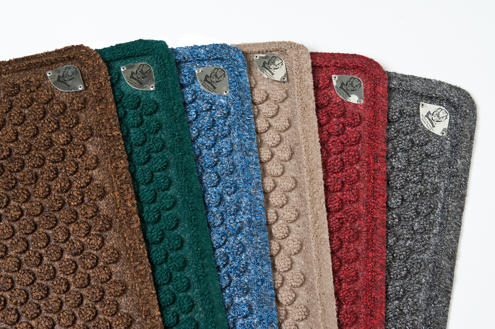
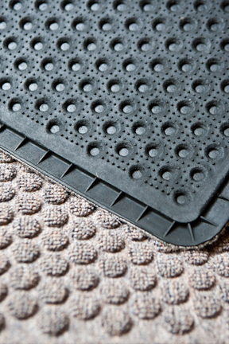

About DR. DOORMAT See how it works
The First Doormat That Can Block Allergy Irritants & Safely Destroys Microorganisms on Contact!

Dr. Doormat is the first antimicrobial treated doormat designed for home use. The mat is infused during the manufacturing process with a specially formulated antimicrobial treatment that permanently bonds to the fibers of the doormat and cannot be tracked through your home. Dr. Doormat is attractive and ideal for all entrances of your home, providing protection for you and your family throughout the life of the product..
Dr. Doormat goes to work for you the moment your shoe makes contact, instantly penetrating the cell membrane of the invading microbes (germs) and rendering them harmless without poisoning them. Just wipe your shoes at least twice on Dr. Doormat before entering the home to guarantee the greatest results.
Dr. Doormat is Eco-Friendly. Debbie Greenspan traveled the globe to discover the highest quality and most environmentally responsible materials. Driven by a zealous commitment to make her home as healthy as possible for her young children, Debbie spent years searching for a manufacturer able to produce the mat according to her discerning standards. She was not willing to make any compromises on quality when making this product and refused to make any concessions regarding the impact on the planet. The bottom of the mat touching your floor is made from natural/virgin and recycled, non-slip rubber. No rubber trees are cut down in the production of Dr. Doormat. Instead, the natural latex is sapped from the trees. The entire surface is comprised of a high quality, luxurious, stain resistant recycled and virgin polypropylene yarn reducing waste on our planet. The resin and pigment used are non-toxic. For the past 30 years, the antimicrobial technology has been successfully used in consumer and medical goods including diapers, socks and medical drapes. Dr. Doormat uses the only antimicrobial treatment on the market that is non-leaching into the environment and destroys microorganisms with a physical mode of action instead of poisoning them. The chemistry has been accepted and registered with the EPA, EU and other regulatory agencies for this specific application.
MAT SPECIFICATIONS
- Made in the USA
- Eco-Friendly, Sustainable, Reusable
- Hypoallergenic
- Machine Washable in front loading machine
- Two-year Manufacturer’s Warranty
- Surface area is made of the highest quality stain resistant recycled and virgin polypropylene fiber using non-toxic resin and pigment.
- Durable, flexible, industrial strength, rubber backing with molded rubber nibs reduces mat movement.
- Elegant bubble pattern scrapes dirt and grit off shoes while removing moisture at the same time.
- Doormat is framed with a raised, inch wide border that forms a tray trapping water and dirt.
- Mats are hand cut.
- Mats available in two sizes: Home size: 24”x18”x3/8”, 4 lbs. and Apartment size: 36”x24”x3/8”, 2 lbs.
- Specially formulated antimicrobial treatment controls and destroys microorganisms on contact, prevents deterioration and odors and extends the life of the mat. The antimicrobial formula is biodegradable, non-toxic and permanently bonded to the fibers of the yarn.
CARE INSTRUCTIONS
To get the most out of your mat and to maintain its appearance and usefulness over the longest period of time, the manufacturer suggests the following:
-
Dr. Doormat is designed for indoor use and will work effectively outdoors providing the mat is not directly exposed to the elements.
-
Shake the mat out regularly and whenever you see debris on the surface. Shake it outside your home (NEVER INSIDE THE HOME).
-
Vacuum the mat twice a week especially in heavy traffic areas.
-
If carpet is embedded with excessive soil, shampooing is recommended. Mild liquid detergent (1/4 cup per gallon of water) mixed with tepid water. Hand brush method will yield good results.
-
Rinse with warm water or hose down to remove dirt and excess detergent and place in an inclined position to drain dry. DO NOT USE BLEACH. Steam cleaning or professionally cleaning is allowed.
-
There is never a need to re-treat the mat. The treated surface keeps its active level for the life of the product.
-
Dr. Doormat can be washed in a front-loading washing machine and still maintain its efficacy up to 20 washes. Delicate cycle, 35 minutes, select warm/cold, mild liquid detergent, hang to dry. Trim loose fraying edges with scissors. Sear edges with lighter if necessary. Please make sure to do this outside or in a controlled environment.
warranty
Dr. Doormat comes with a two-year manufacturer’s warranty against defects that are due to faulty material or workmanship when used and maintained as instructed. This warranty does not include damage to the product resulting from accident or misuse. The mats are hand cut. As a result, it is common to notice occasional fraying around the edges, especially after washing. Simply trim loose edges with scissors and run a match or lighter along the area to sear. This will instantly freshen up the edges. Please make sure to do this outside or in a controlled environment. The antimicrobial treated surface area will remain effective for the life of the product providing the owner follows the proper care instructions provided. The obligation under this warranty is limited to the original user and to the replacement, repair or prorated refund of the product. If the product should become defective within the warranty period, Materials must be returned, freight pre-paid, when requested for inspection to obtain this warranty. Freight charges will be credited when goods are deemed warrantable.